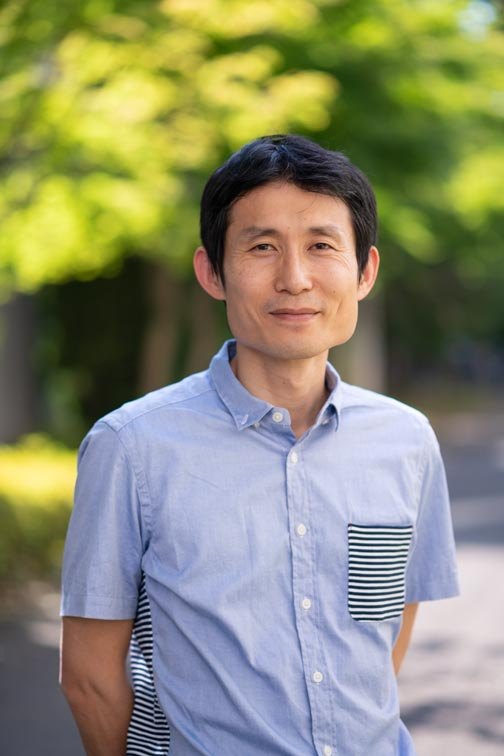

English page
to Japanese page
Profile

Seikei University
Faculty of Science and Technology
Department of Science and Technology
Professor
E-mail:komori(at)st.seikei.jp
Career
- March, 2005
Bachelor of Engineering in Statistics from Keio University
- March, 2007
- March, 2010
- April, 2010
Prediction and Knowledge Discovery Research Center in The Institute of Statistical Mathematics
- January, 2012
Research Center for Statistical Machine Learning in The Institute of Statistical Mathematics
- April, 2012
School of Statistical Thinking in The Institute of Statistical Mathematics
- October, 2015
Department of Electrical and Electronics Engineering in University of Fukui
- April, 2018
Department of Computer and Information Science in Seikei University
- April, 2022
Department of Science and Technology in Seikei University
Research fields
Machine learning，Biometrics，Information geometry, Data Science
Publications
- Komori, O. and Eguchi, S. (2010). A Boosting Method for Maximizing the Partial Area under the ROC Curve. BMC Bioinformatics 11, 314. online
- Komori, O. (2011). A Boosting Method for Maximization of the Area under the ROC Curve. Annals of the Institute of Statistical Mathematics 63, 961-979.
- Komori, O. and Eguchi, S. (2011).Boosting learning algorithm for pattern recognition and beyond. IEICE Transactions on Information and Systems E94-D,1863-1869.
- Eguchi, S., Komori, O. and Kato, S. (2011). Projective power entropy and maximum Tsallis entropy distributions. Entropy 13, 1746-1764 online.
- Takenouchi, T., Komori, O. and Eguchi, S. (2012).An extension of the Receiver Operating Characteristic curve and AUC-optimal classification. Neural Computation 24, 2789-2824.
- Chen, P., Hung, H., Komori, O., Huang, S., Eguchi, S. (2013). Robust Independent Component Analysis via Minimum γ-Divergence Estimation. Selected Topics in Signal Processing, IEEE Journal 7, 614-624.
- Komori, O., Pritchard, M., Eguchi, S. (2013). Multiple suboptimal solutions for prediction rules in gene expression data. Computational and Mathematical Methods in Medicine 2013, 14.
- Notsu, A., Komori, O., Eguchi, S. (2014). Spontaneous Clustering via Minimum Gamma-divergence. Neural Computation 26, 421-448.
- Kanao, K., Komori, O., Nakashima, J., Ohigashi, T., Kikuchi, E., Miyajima, A., Nakagawa, K., Eguchi, S. and Oya, M. (2014). Individualized prostate-specific antigen threshold values to avoid overdiagnosis of prostate cancer and reduce unnecessary biopsy in elderly men. Japanese Journal of Clinical Oncology 44, 852-859.
- Eguchi, S., Komori, O. and Ohara, A. (2014). Duality of maximum entropy and minimum divergence. Entropy 16, 3552-3572
- Komori, O., Eguchi, S. and Copas, J. B. (2015). Generalized t-statistics for two-group classification. Biometrics 71, 404-416.
- Takenouchi, T, Komori, O. and Eguchi, S (2015). Binary classification with a pseudo exponential model and its application for multi-task learning. Entropy 17, 5673-5694
- Komori, O., Eguchi, S., Ikeda, S., Okamura, H., Ichinokawa, M. and Nakayama, S. (2015). An asymmetric logistic regression model for ecological data. Methods in Ecology and Evolution 7, 249-260
- Hamada, R., Nakashima, M., Ohori, Y., Komori, O., Yoshioka, K. and Tachibana, M. (2015). Preoperative predictive factors and further risk stratification of biochemical recurrence in clinically localized high-risk prostate cancer. International Journal of Clinical Oncology 21, 595-600
- Tsujimoto, M., Komori, O. and Imura, S. (2016). Effect of lifespan and age on reproductive performance of the tardigrade Acutuncus antarcticus: minimal reproductive senescence Hydrobiologia 772, 93-102
- Okuma, H., Koizumi, F., Hirakawa, A., Nakatochi, M., Komori, O., Hashimoto, J., Kodaira, M., Yunokawa, M., Yamamoto, H.,Yonemori, K., Shimizu, C., Fujiwara, Y. and Tamura, K. (2016). Clinical and microarray analysis of breast cancers of all subtypes from two prospective preoperative chemotherapy studies British Journal of Cancer 115, 411-419
- Omae, K., Komori, O. and Eguchi, S. (2016). Reproducible detection of disease-associated markers from gene expression data. BMC Medical Genomics 9, 53
- Omae, K., Komori, O. and Eguchi, S. (2017). Quasi-linear score for capturing heterogeneous structure in biomarkers. BMC Bioinformatics 18, 308
- Komori, O., Eguchi, S., Saigusa, Y., Okamura, S. and Ichinokawa, M. (2017). Robust bias correction model for estimation of global trend in marine populations. Ecosphere 8, 1-9
- Baek, S., Komori, O. Ma, Y. (2018). An optimal semiparametric method for two-group classification. Scandinavian Journal of Statistics 45, 806-846
- Sakai, Y., Honda, M., Matsui, S., Komori, O., Murayama, T., Fujiwara, T., Mizuno, M., Imai, Y., Yoshimura, K., Nasti, A., Wada, T., Iida, N., Kitahara, M., Horii, R., Tamai, T., Nishikawa, M., Okafuji, H., Mizukoshi, E., Yamashita, T., Yamashita, T., Arai, K., Kitamura, K., Kawaguchi, K., Takatori, H., Shimakami, T., Terashima, T., Hayashi, T., Nio, K., Kaneko, S. (2019) Development of novel diagnostic system for pancreas cancer including early stages measuring mRNA of whole blood cells. Cancer Science，110, 1364-1388
- Ashad. M.A., Komori, O. Deng, H., Calhoun, V., Wang, Y. (2019) Robust kernel canonical correlation analysis to detect gene-gene co-associations: A case study in genetics, Journal of Bioinformatics and Computational Biology, 17 1-28
- Hashimoto, T., Nakashima, J., Inoue, R., Komori, O., Yamaguchi, Y., Kashima, T., Satake, N., Nakagami, Y., Namiki, K., Nagao, T. and Ohno, Y. (2020) The significance of micro lymphatic invasion and pathological Gleason score in prostate cancer patients with pathologically organ-confined disease and negative surgical margins after robot-assisted radical prostatectomy, International Journal of Clinical Oncology, 25, 377-383
- Komori, O., Eguchi, S., Saigusa, Y., Kusumoto, B. and Kubota, Y. (2020) Sampling bias correction in species distribution models by quasi-linear Poisson point process, Ecological Informatics, 55, 1-11
- Komori, O. and Eguchi, S. (2021) A unified formulation of k-means, fuzzy c-means and Gaussian mixture model by the Kolmogorov-Nagumo average, Entropy, 23, 518
- Hashimoto, T., Komori, O., Nakashima, J., Kashima, T., Yamaguchi, Y. Satake, N., Nakagami, Y., Shishido, T. Namiki, K. and Ohno, Y. (2022) Prostate-specific antigen nomogram to predict advanced prostate cancer using area under the receiver operating characteristic curve boosting, Urologic oncology, 40, 162.e9-162.e16
- Saigusa, Y., Eguchi, S. and Komori, O. (2022) Generalized quasi-linear mixed-effects model, Statistical Methods in Medical Research, 31,1280-1291
- Higashino, Y., Isozaki, M., Tsunetoshi, K., Komori, O., Shibaike, Y. Kawajiri, S., Yamada, S., Akazawa, A., Kidoguchi, M., Kodera, T. Arishima, H., Inoue,T., Fukushima, T. and Kikuta, K.(2022) Factors affecting global neurocognitive status and frontal executive functions in the early stage after surgical clipping of unruptured anterior circulation aneurysms with respect to keyhole clipping and conventional clipping, Acta Neurochirurgica, 164, 2219-2228
- Onishi, T., Komori, O., Ando, T., Fukutomi, M., Tobaru, M. (2023) Effectiveness of high implantation of Sapien 3 in preventing pacemaker implantation: a propensity score analysis archives of cardiovascular diseases, Archives of Cardiovascular Diseases, 116, 78-87
- Kawajiri, S., Isozaki, M., Komori, O., Yamada, S., Higashino, Y., Yamauchi, T., Akazawa, A., Kidoguchi, M., Yomo, M. M.D., Kodera, T., M.D., Arishima, H., Awara, S., Inatani, M., Kikuta, K. (2023) Visual Evoked Potential Can Predict Deterioration of Visual Function after Direct Clipping of Paraclinoid Aneurysm with Anterior Clinoidectomy, Neurosurgery, 92, 1276-1286
- Tutmez, B. and Komori, O. (2023) Regularization learning of trace element contamination stemmed from tailings dam-break, Pollution, 9, 1082-1097
- Komori, O., Saigusa, Y. and Eguchi, S. (2023) Statistical learning for species distribution models in ecological studies, Japanese Journal of Statistics and Data Science, accepted
- Tsunetoshi, C., Tsunetoshi, K., Komori, O., Higashino, Y., Isozaki, M., Arai, Y., Kodera, T., Arishima, H., Matsuda, K., Yamaguchi, T., Hasegawa, M. and Kikuta, K. (2023) Factors affecting the duration of continuous electrocardiographic monitoring to detect atrial fibrillation in acute ischemic stroke, Journal of Stroke and Cerebrovascular Diseases
- Kidoguchi, M., Akazawa, A. Komori, O., Isozaki, M., Higashino, Y., Kawajiri, S., Yamada, S., Kodera, T., Arishima, H., Tsujikawa, T., Kimura, H., Kikuta, K.(2023) Prediction of occurrence of cerebral infarction after successful mechanical thrombectomy for ischemic stroke in the anterior circulation by arterial spin labeling, Clinical Neuroradiology, accepted
Proceedings and review papers
- Robust hierarchical clustering for gene expression data analysis (2009). Md. Nurul Haque Mollah, Mari Pritchard, Osamu Komori and Shinto Eguchi. Communications of SIWN 6, 118-122.
Presentations
- March 6, 2017
CFAS 2017: International Conference on Fisheries and Aquatic Sciences, (Patong Beach Hotel, Thailand)
Robustified asymmetric logistic regression model for global fish stock assessment. Osamu Komori.
January 22, 2017 The International Conference on Bioinformatics and Biostatistics for Agriculture Health and Environment, (Rajshahi University, Bangladesh)
Asymmetric logistic regression model. Osamu Komori and Shinto Eguchi.
June 13, 2016 Information Geometry and its Applications IV, (Liblice Castle Hotel, Czech Republic)
Information geometry associated with two generalized means. Shinto Eguchi, Osamu Komori and Atsumi Ohara.
June 13, 2016 Information Geometry and its Applications IV, (Liblice Castle Hotel, Czech Republic)
A simple mixture model for probability density estimation based on a quasi divergence (poster). Osamu Komori and Shinto Eguchi.
December 19, 2015 IASC-ARS 2015, (National University of Singapore, Singapore)
Extension of AUC for classification considering heterogeneity in distributions. Osamu Komori and Shinto Eguchi.
December 11,2015 Workshop on High-Dimensional Statistical Analysis, (Sinica, Taiwan)
Generalized t-statistic and AUC for binary classification. Osamu Komori and Shinto Eguchi.
September 23, 2014 34th International Workshop on Bayesian Inference and Maximum Entropy Methods in Science and Engineering (Amboise, France)
Maximum power entropy method for ecological data analysis. Osamu Komori and Shinto Eguchi.
June 30, 2014 The 3rd Institute of Mathematical Statistics Asia Pacific Rim Meeting (Howard International House, Taipei)
Assessment of fishery status based on mis-label model. Osamu Komori and Shinto Eguchi.
March 5, 2014 Innovation and Challenges for Fisheries Assessment and Management (Keio University)
Boost learning for evaluation of fishery stock status. Osamu Komori and Shinto Eguchi.
December 20, 2013 The Ninth ICSA International Conference:
Challenges of Statistical Methods for Interdisciplinary Research and Big Data (Hong Kong Baptist University)
Assessment of Fishery Status Based on a Boosting Method. Osamu Komori and Shinto Eguchi.
August 23, 2013 Joint Meeting of the IASC Satellite Conference for the 59th ISI WSC andthe 8th Conference of the Asian Regional Section of the IASC (Seoul)
A class of u-statistics combining multiple markers for two-group classification. Osamu Komori, Hung Hung, Pengwen Chen, Su-Yun Huang and Shinto Eguchi.
October 15, 2012 Academia Sinica seminar (Taipei)
Maximization of the Generalized
t-Statistics for Two-class Discrimination
Problem. Osamu Komori, Shinto Eguchi and John B. Copas.
August 28, 2012 XXVI the International Biometric Conference (Kobe)
Maximization of a Generalized t-Statistic
for Two-Class Discrimination Problem. Osamu Komori, Shinto Eguchi and John B. Copas.
July 4, 2012 The 2nd Institute of Mathematical Statistics Asia Pacific Rim Meeting (Ttsukuba)
Density estimation based on
U-divergence with volume-mass-one. Osamu Komori, Kanta Naito and Shinto Eguchi.
December 20, 2011 Workshop in National Taiwan University(National Taiwan University)
Maximization of t-statistics based on
semiparametric inference. Osamu Komori, Shinto Eguchi.
December 17, 2011 Joint Meeting of The 2011 Taipei International Statistical Symposium and 7th Conference of the Asian Regional Section of the IASC
(Sinica)
Projective power entropy based learning for unsupervised data. Shinto Eguchi, Osamu Komori and Akifumi Notsu
December 7, 2010 25th International Biometric Conference (Federal University of Santa Catarina)
A Statistical Method for the Partial Area under the ROC Curve. Osamu Komori, Shinto Eguchi.
May 1, 2010 Chinese Institute of Probability and Statistics (National Dong Hwa University)
A Boosting Method for Maximization of the Area under the ROC Curve and its Application to PSA Data. Osamu Komori, Shinto Eguchi.
April 25, 2010 Tutorial Workshop on Learning with Information Divergence Geometry-a short course. (National Taiwan University)
Pattern Recognition from Genome and Omics Data. Osamu Komori, Shinto Eguchi.
June 28, 2009 The 1st Institute of Mathematical Statistics ASIA Pacific Rim Meeting (Seoul)
Maximization of the Partial Area under the ROC Curve Using a Boosting Technique. Osamu Komori, Shinto Eguchi．
April 29, 2009 AUA 2009 Anuual Meeting (Chicago)
PSA cut-off nomogram that avoid over-detection of prostate cancer in elderly men. Kent Kanao, Osamu Komori, Jun Nakashima, Takashi Ohigashi, Eiji Kikuchi, Akira Miyajima, Ken Nakagawa，Shinto Eguchi, Mototsugu Oya．
April 26, 2009 The Fifth Statistical and Machine Learning Workshop (National Cheng Kung University)
A Boosting Method Focusing on the Partial Area under the ROC Curve. Osamu Komori，Shinto Eguchi．
December 7, 2008 IASC2008 (Yokohama)
A Boosting Method for Maximizing the Partial Area under the ROC Curve. Osamu Komori，Shinto Eguchi．
June 6, 2008 Biomarker Group Meeting（University of Alberta）
Flexible Combination of Covariates by Boosting the Area under the ROC Curve. Osamu Komori，Shinto Eguchi．
December 29, 2007 International Conference on Multiple Decision Theory, Statistical Inference and Applications（Fu Jen Catholic University）
Flexible Combination of Covariates by Boosting the Area under the ROC Curve. Osamu Komori，Shinto Eguchi．
Studying abroad
- June 1 to July 1, 2008: at Department of Public Health Sciences in University of Alberta. I joined research group of Professor
Yutaka Yasui.
- September 23 to October 21, 2012: at Institute of Statistical Science in Academia Sinica, hosted by Professor Su-Yun Huang
- January 30 to February 21, 2016: at The University of Auckland, hosted by Professor Thomas Yee